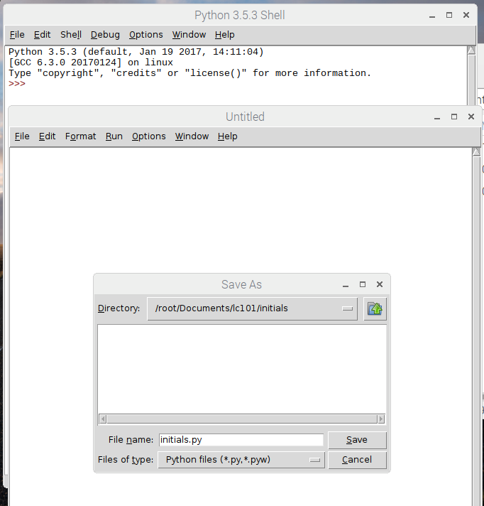

1. Initials¶
The main goal of this assignment is to remove you from the comfortable sandbox of the Active Code editors in this online book, and introduce you to the tools you need to start writing Python code locally on your own computer. By the end of the assignment, you will have written a small text-based program that tells the user the initials of his or her name.
Initials¶
Let's jump right in and get to work!
Setup¶
First, you must create a new folder for the project, and a new file within the folder. And while we’re here, let’s make sure you set up your overall directory structure in a nice, organized way for future assignments.
Open up a terminal (command line) window on your computer. After completing the Python setup above, you should already have a folder named lc101/ in your home directory, where you will save all your assignments for this class.
But if you do not yet have such a class parent folder on your file system, then create one now:
$ mkdir lc101
Note
Remember that in the example above, you should not actually type the dollar sign $. We use that symbol just as a convention to indicate that the example takes place at the command-line prompt in a terminal window. Additionally, note that the Windows command prompt is a >>, not a $.
Next, use the cd command to navigate so that you are inside that parent folder:
$ cd lc101
Once you are inside your directory for the class, create a new sub-directory for this assignment called initials/, and then cd into it:
$ mkdir initials
$ cd initials
In general, for the remainder of LC 101, you should follow this same pattern for every new assignment:
- Navigate into the parent folder (e.g.
lc101/). - Create a new subfolder for the new assignment.
- Change directories into that new subfolder.
- Start coding!
For example, if you are starting an assignment called Hungry Hungry Hippos, then you should do this:
$ cd lc101
$ mkdir hungry-hungry-hippos
$ cd hungry-hungry-hippos
And your overall directory structure will look like this:
lc101/
|
+------ using-python-locally/
| |
| +----- hello.py
|
+------ initials/
| |
| +----- # initials stuff
|
+------ hungry-hungry-hippos/
| |
| +----- # hippo stuff
... etc
The Initials Program¶
Now you are finally ready to start coding! Inside your initials/ folder, create a new file called initials.py:
If you are on a linux system (i.e. a Raspberry Pi), you can create that file by using the touch command:
$ touch initials.py
If you are using a Windows based computer, the only way to make a new file from the command prompt is to redirect the output of a command, something similar to:
echo "#Initials" >> initials.py
Rather then do that, which is a bit of a hack, use the file creation mechanism of your editor (i.e. Idle) to create the initials file:
Open up that file in your text editor (e.g., Idle), and copy and paste in the following starter code:
def get_initials(fullname):
""" Given a person's name, returns the person's initials (uppercase) """
# TODO your code here
Your function will receive one argument – fullname, a string representing someone’s name – and should return a string with that name’s capitalized initials.
Here are some examples of what your function should return for various fullname arguments:
fullname |
return value |
|---|---|
| Ozzie Smith | OS |
| Bonnie blair | BB |
| George | G |
| Daniel Day Lewis | DDL |
Note
Even if the name starts with a lowercase letter, you should always capitalize the initials. For example, notice how even if fullname == "Bonnie blair", you should still return "BB" rather than "Bb"
Note
You may assume that the name will contain only letters (uppercase and/or lowercase) plus single spaces between words. This means you don’t have to worry about Conan O’Brien, T.S. Eliot, or Cee-Lo Green.
If you were to invoke your function and print the result, it would look something like this:
ozzie_inits = get_initials("Ozzie Smith")
print("The initials of 'Ozzie Smith' are", ozzie_inits)
# => prints "The initials of 'Ozzie Smith' are OS"
Okay, enough chit-chat. Go forth and code!
Hint
You’ll need to collect the initials as you find them, and return them all together at the end. You may want to re-read about The Accumulator Pattern.
Testing¶
When (you think) you are finished writing your get_initials function, you should test it to make sure it works. There are a few ways to do this:
- You can import your script into a REPL (Python shell), and then feed various inputs into your function.
- Alternatively, you can just add some print statements (like the “Ozzie Smith” example above) to your
initials.pyscript, and check to see that various inputs produce the correct results.
Technique 1 looks like this:
$ python
Python 3.6.0 |Continuum Analytics, Inc.| (default, Dec 23 2016, 13:19:00)
[GCC 4.2.1 Compatible Apple LLVM 6.0 (clang-600.0.57)] on darwin
Type "help", "copyright", "credits" or "license" for more information.
>>> from initials import get_initials
>>> get_initials("Ozzie Smith")
OS
>>> get_initials("bonnie blair")
BB
>>> get_initials("Daniel Day Lewis")
DDL
... etc
quit()
Note
You must run python from your lc101/initials directory for the import command to work.
That looks complicated but its actually very easy. Try typing python into your terminal and you’ll see. Technique 1 is definitely recommended, because writing and changing bunch of print statements starts to get annoying very quickly.
But if you prefer Technique 2, here’s how that works: Simply add print statements to your file, and then run your script on the command-line:
$ python caesar.py
The initials of 'Ozzie Smith' are OS
The initials of 'bonnie blair' are BB
The initials of 'Daniel Day Lewis' are DDL
... etc
After running your script, just test by hand that the output matches what you expected to see.
Either way, whether using the REPL or print statements, make sure to test your function against a healthy variety of inputs.
Make It Interactive¶
Let’s now turn this into an interactive program that a user can run from the terminal. All you have to do is add an input statement to ask the user for his/her name, and then a print statement to report the results back to him/her. Your program should work like this:
$ python initials.py
What is your full name?
Ozzie Smith
OS
Just to be clear about the example above:
- The user typed the first line, causing the program to run.
- Then, the program printed the second line asking for their name.
- Then the user typed the third line (“Ozzie Smith”).
- Finally, the program printed the initials (“OS”).
Make it Importable¶
Almost done! There is one more thing you must do before submitting. Presumably, your file now looks like this:
def get_initials(fullname):
# some code here
# some more code here (input and print statements)
As you know, the second block of code contains the lines that actually get executed when the user runs the script. The code inside the get_initials function, by contrast, only executes thanks to the fact that it gets invoked by one of the statements from that second block of code that sits all the way on the left, at the global level of scope.
Generally speaking, however, it is actually bad practice to have “loose” statements floating around at that left-most, unindented scope of a script. There are two reasons why:
Issue 1: Organization. As your script grows larger, it can become hard to keep track of all those loose statements, especially if you don’t keep them all together in one block. At that point, you will start to loose track of exactly what happens when the script is run.
Issue 2: Importing. When some other file tries to import this file, all the loose statements will be executed, which is probably not what the other file wanted. For example, say you are writing another script, and you once again encounter the need to parse initials from people’s names. Instead of re-writing the get_initials function, this is a perfect chance to reuse the code you have already written by importing your initials.py file. Sounds great! But unfortunately, the moment you import the file, those input and print statements will blurt out and start talking to the user.
The solution to Issue 1 is to move your input and print statements into a main function, like this:
def get_initials(fullname):
# some code here
def main():
# some more code here (input and print statements)
main()
In the new version, notice that we have placed the second block of code inside a function called main. This is the generally accepted pattern: Move all loose statements into a main function so that you have them together in one place. Finally, the only loose statement left is the invocation of main at the end.
Issue 2 can be solved by adding one more line of code that places the main() invocation inside a (strange-looking) if statement:
def get_initials(fullname):
# some code here
def main():
# some more code here (input and print statements)
if __name__ == '__main__':
main()
In effect, that conditional says:
“If this is actually the main program that is being run, then go ahead and execute themainfunction. Otherwise, if this file is being imported, or something else is going on, then stay quiet and do nothing.”
Note
If you are curious about the if __name__ == '__main__': conditional, you can check out this Stack Overflow post.
Now we are good to go! The program works normally when run directly from the command-line, but if some other file imports it, the main function will not execute. All of this should be a review, since we have been using this structure throughout the book after learning about __main__ in the Functions chapter. But it is especially important to follow this organization now that you are using Python locally.